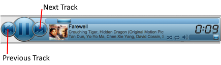

To navigate to start playback of either the previous or next tracks in the playlist
- Click on the Previous Track or Next Track buttons.
- Pressing assigned (Ctrl and Left Arrow ⇠) keys to go to the previous track.
- Pressing assigned (Ctrl and Right Arrow ⇢) keys to go to the next track.
